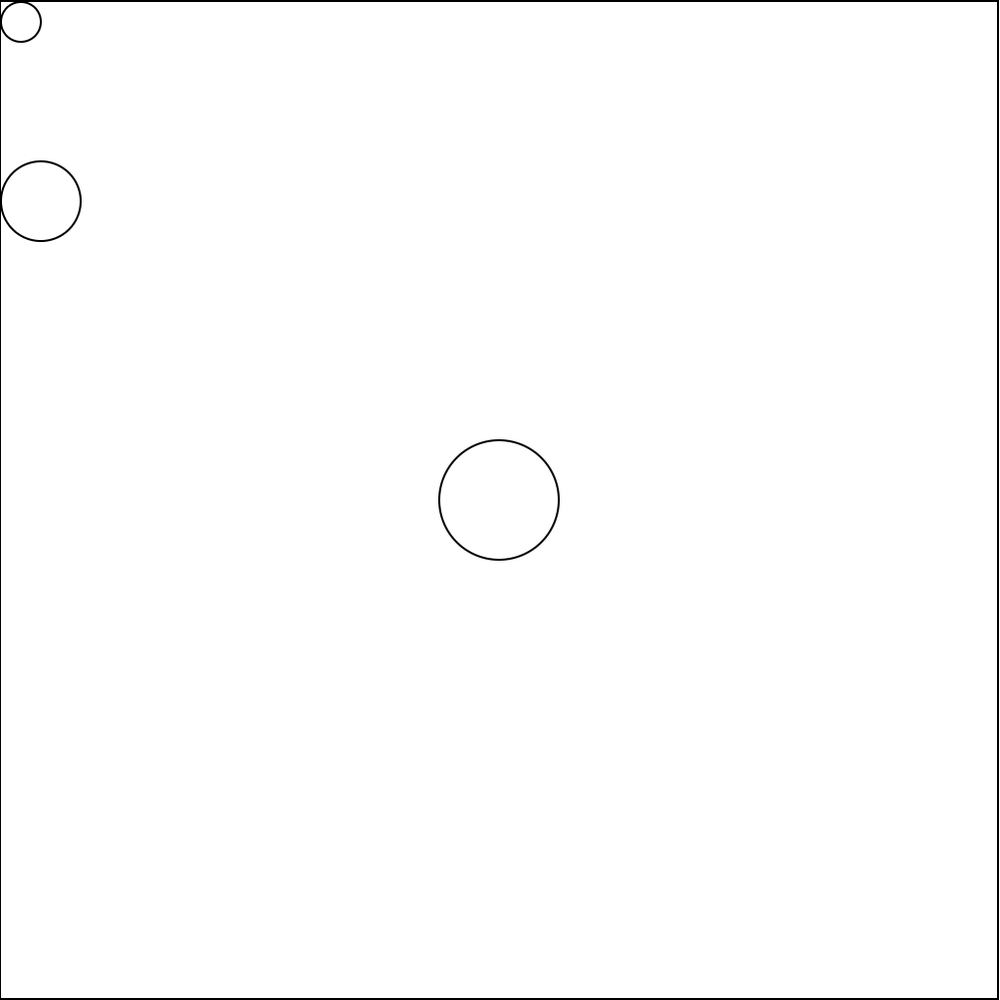
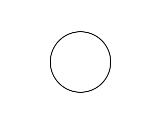
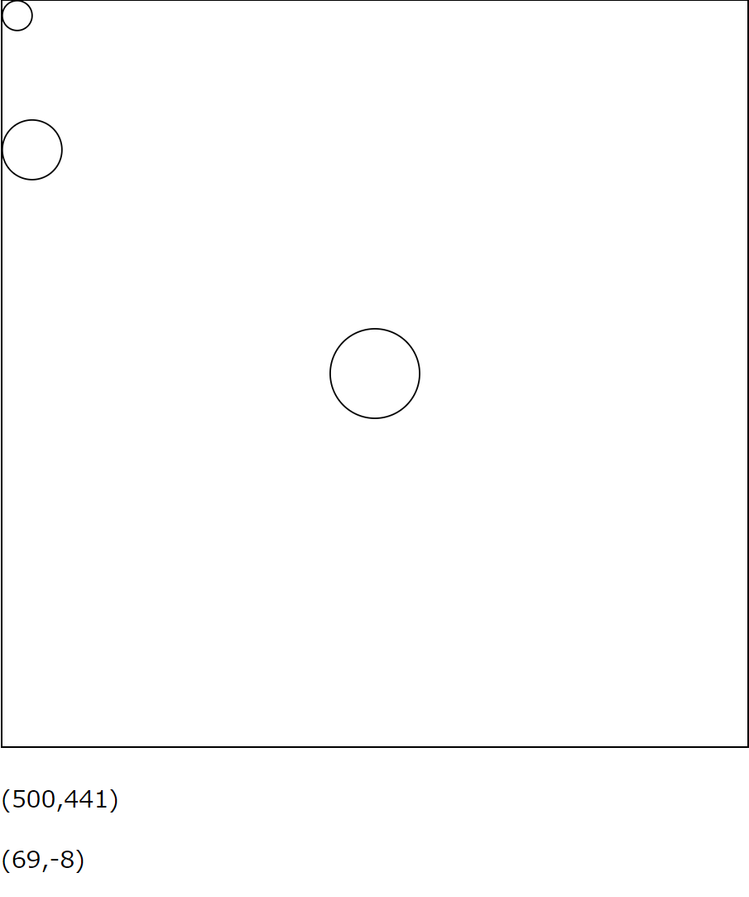
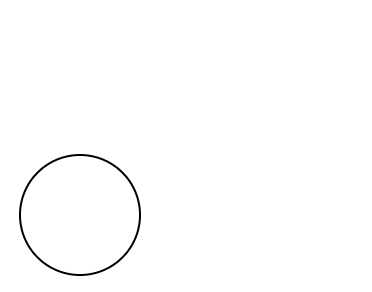

ElmでSVGの要素をドラッグ移動したいと思った。ドラッグ操作を実現するパッケージにelm-draggableがある。今回は勉強として、それに頼らず実装することを試みる。elm-draggableを用いた方法については次回やる。
初期状態
詳細は省略するが、Elmプロジェクトを作成してelm/svgとelm/jsonをインストールしておく。
src/Main.elmは以下のようにしておく。elm reactorで動くことを確認する。
module Main exposing (..)
import Browser
import Browser.Events as BE
import Html exposing (..)
import Html.Attributes exposing (..)
import Json.Decode as JD
import Svg as S exposing (Svg)
import Svg.Attributes as SA
import Svg.Events as SE
main =
Browser.element
{ init = init
, update = update
, view = view
, subscriptions = subscriptions
}
type alias Model =
{}
type Msg
= Dummy
init : () -> ( Model, Cmd Msg )
init _ =
( {}, Cmd.none )
update : Msg -> Model -> ( Model, Cmd Msg )
update msg model =
( model, Cmd.none )
view : Model -> Html Msg
view model =
div [] []
subscriptions : Model -> Sub Msg
subscriptions model =
Sub.none
目標
- SVGの領域に円が複数存在する
- 円をドラッグ移動できるようにしたい。
- 円のドラッグ中はその色を橙色にし、それ以外のときは白にする
方針
ドラッグ処理については次の処理で実現することになる。
- ドラッグ開始は
Svg.Events.onMouseDownをciecle要素に付ける
- ドラッグ中は
Svg.Events.onMouseMoveをsvg要素に付ける
- ドラッグ終了は
Browser.Events.onMouseUpをsubscriptionで登録する
いくつかの方針が考えられ、かつ慎重に考えなければならないことは、次の3点。
- 円をどんな形で扱うか: 特に、色の情報を円に持たせるか否か
- 円の集合をどんな形で扱うか: 円が
Circleだとして、List Circleにするか、Set Circleにするか。もしくは何かIdを持たせて、Dict Id Circleにするか、など
- ドラッグ中の円をどんな形で扱うか:
Modelにドラッグ中のCircleを直接持たせるか、それともCircleのIdを持たせるか、など。
今回の方針
結局何がベストなのかはよく分からないのだが、とりあえず今回は次のようにやってみる。
- 円は ( id, x座標, y座標, 半径 ) の情報を持つ。idは
Intとして扱う。
- 円の集合は
List Circleとして持つ。また、円のidは一意であって欲しいので、「次付与するid」も情報として持たせることにする。これをまとめてCirclesと呼ぶことにする。
- ドラッグされている状態の
CircleをのidをModel内に持たせる。具体的には、hold : Maybe Idとしてレコードに持たせる。
3点目についての補足
ModelにCircleを直接持たせる場合、ドラッグ中のCircleとCirclesに含まれているCircleとのデータの同期を取る必要がある。同期を取るのは面倒なので、次のようにやる方が良い。
- ドラッグ中の
Circleと他のCircleを別々に管理する
- ドラッグ開始時、
Circlesからドラッグ中のCircleを一旦削除して、ドラッグ終了後に再び戻す。
- 描画するときは、ドラッグ中の
Circleと他のCircleを統合する
個人的にはこの処理を書くのが少し面倒に感じたので、Modelにはドラッグ中のCircleのIdだけ持たせておいて、それを使ってCircles内のCircleを操作する方針を選んだ。
ただし、Circleを持たせることが活きてくる状況として、「ドラッグ中に何か特別な情報をCircleに持たせる場合」が考えられる。例えば、ドラッグ中の円に対して、「ドラッグ開始時の座標が何だったか」「他の円との距離」を持たせる場合が考えられる。このような場合は、ドラッグ中の円とドラッグしていない円とで分けてデータを管理したほうが良さそう。
追記(2020/02/26):
elm-draggableのサンプルの1つに、上記と似た実装があった。ただし、ここではドラッグ中の要素movingBoxをModelではなく要素の集合BoxGroup内に持たせている。座標を更新したいときはmovingBoxを変更すればよいだけ。この方針も悪くない、と思った。
Circle/Circles の定義
src/Circle.elmを作成し、そちらでCircleとCirclesを定義する。
module Circle exposing (..)
type alias Id = Int
type alias Circle =
{ id : Id
, x : Float
, y : Float
, r : Float
}
type alias Circles =
{ all : List Circle
, nextId : Id
}
ユーティリティ関数の定義
Circlesの内部表現を気にせずに扱えるように、いくつかのユーティリティ関数を定義しておく。add関数は円を追加したいときに呼び出す関数だが、今回は利用しない。
empty : Circles
empty =
{ all = []
, nextId = 0
}
type alias CircleNoId =
{ x : Float
, y : Float
, r : Float
}
fromList : List CircleNoId -> Circles
fromList list =
{ all = List.indexedMap (\i c -> { id = i, x = c.x, y = c.y, r = c.r }) list
, nextId = List.length list
}
toList : Circles -> List Circle
toList circles =
circles.all
add : CircleNoId -> Circles -> Circles
add c circles =
let
circle =
{ id = circles.nextId
, x = c.x
, y = c.y
, r = c.r
}
in
{ circles
| all = circle :: circles.all
, nextId = circles.nextId + 1
}
update : Id -> (Circle -> Circle) -> Circles -> Circles
update id f circles =
let
new =
List.foldr
(\c acc ->
if c.id == id then
f c :: acc
else
c :: acc
)
[]
circles.all
in
{ circles | all = new }
円の描画
src/Main.elmに戻る。次のimport文を追加。
import Circle as C exposing (Circle, CircleNoId, Circles, Id)
Modelの変更
ModelにCirclesを追加しておく。circlesとしていくつかの初期データを投入しておく。
type alias Model =
{ circles : Circles
}
...
init : () -> ( Model, Cmd Msg )
init _ =
( { circles =
C.fromList
[ CircleNoId 10 10 10
, CircleNoId 20 100 20
, CircleNoId 250 250 30
]
}
, Cmd.none
)
Viewの変更
SVG描画の処理はviewSvgに任せる。
view : Model -> Html Msg
view model =
div []
[ viewSvg model
]
viewSvg : Model -> Svg Msg
viewSvg model =
S.svg
[ style "border" "1px solid #000"
, style "width" "500px"
, style "height" "500px"
]
[ viewCircles model
]
Circle(s)の描画をviewCircle(s)に任せる。
viewCircles : Model -> Svg Msg
viewCircles model =
S.g []
(List.map (viewCircle model) (C.toList model.circles))
viewCircle : Model -> Circle -> Svg Msg
viewCircle model circle =
S.g
[ SA.transform (translate circle.x circle.y)
]
[ S.circle
[ SA.r (String.fromFloat circle.r)
, SA.fill "#fff"
, SA.stroke "#000"
]
[]
]
translate : Float -> Float -> String
translate x y =
"translate(" ++ String.fromFloat x ++ "," ++ String.fromFloat y ++ ")"
ここで、viewCircle、viewCirclesはModelを引数にとるようにした。一般に、viewと同じく要素の描画を担う関数に関しては、Modelを引数にとった方が、後々の修正や変更が楽になると思われる。なぜなら、Modelこそが要素描画のための全ての情報を持っているからである。「今はCircleの情報をもとに描画してたけど、それだけじゃなくてXXの情報も必要になった」などの変更に、比較的簡単に対応できる。
追記(2020/03/04): ただし、Modelを引数にとる、という情報だけでは「この関数の機能を実現するためにはどんな値が必要なのか」が分からないため、ソースコードから関数の機能を予想するのが難しくなるかもしれない。なので一概に良いとは言い切れない。
ここまで実装すると、実行結果は以下のようになる。

円をクリック中の色変化
holdの定義
ドラッグ状態にある円をholdとしてModelに持たせる。
type alias Model =
{ circles : Circles
, hold : Maybe Id
}
...
init : () -> ( Model, Cmd Msg )
init _ =
( { circles = ...
, hold = Nothing
}
, Cmd.none
)
ドラッグ開始イベントの定義
circle要素に対してマウスが押下されたときに、CircleHeld idというMsgを送る。CircleHeldを受け取ったとき、holdに円のデータを入れる。
type Msg
= CircleHeld Id
...
update : Msg -> Model -> ( Model, Cmd Msg )
update msg model =
case msg of
CircleHeld id ->
( { model | hold = Just id }
, Cmd.none
)
...
viewCircle : Model -> Circle -> Svg Msg
viewCircle model circle =
S.g
[ ...
]
[ S.circle
[ ...
, SE.onMouseDown (CircleHeld circle.id)
]
[]
]
ドラッグ中の色の変更
fillCircle関数が担う。これは、ドラッグ中の円のときだけ橙色のカラーコードを返す。
viewCircle : Model -> Circle -> Svg Msg
viewCircle model circle =
S.g
[ ...
]
[ S.circle
[ ...
, SA.fill (fillCircle model circle)
...
]
[]
]
fillCircle : Model -> Circle -> String
fillCircle model circle =
case model.hold of
Nothing ->
"#fff"
Just id ->
if circle.id == id then
"#f80"
else
"#fff"
ドラッグ終了イベントの定義
マウスが離されたときに、CircleReleasedというメッセージを送る。特定のDOM要素に依存しないイベントを監視する場合は、subscriptionを用いる。
type Msg
= CircleHeld Id
| CircleReleased
...
update : Msg -> Model -> ( Model, Cmd Msg )
update msg model =
case msg of
...
CircleReleased ->
( { model | hold = Nothing }
, Cmd.none
)
...
subscriptions : Model -> Sub Msg
subscriptions model =
subHold model
subHold : Model -> Sub Msg
subHold model =
case model.hold of
Nothing ->
Sub.none
Just _ ->
BE.onMouseUp (JD.succeed CircleReleased)
Browser.Event.onMouseUpを用いた。Browser.Eventで提供される関数の多くは、引数にJson.Decode.Decoder msgをとる。これは何をDecodeするのかというと、JSのEventオブジェクトをDecodeする。今回はEventから何も取得する必要はないので、Json.Decode.succeedを用いる。
実行結果は以下のようになる。

マウス位置の取得
さて円のドラッグ移動とは、より詳しくいうと「円をクリックしている間にマウスを移動すると、円がそれに追従する」機能だ。これを実現するためには、マウスの位置ではなく「マウスがどれだけ動いたか」という情報も欲しい。マウスの位置は(Mouse)EventオブジェクトのoffsetXとoffsetYで取得できる。マウスの移動量は、1つ前に発火したイベントのx yの位置の差分として計算する。
補足。マウスの移動量についてはmovementXとmovementYが使えそうかなと思ったが、ドラッグ位置がずれた。movementXの説明的にはずれなさそうなのだが。よくわからない。
Modelの定義
mouse : MousePositionを定義する。「マウスがどれだけ動いたか」の情報はdx: Floatとdy: Floatで持たせる。
type alias Model =
{ circles : Circles
, hold : Maybe Circle
, mouse : MousePosition
}
type alias MousePosition =
{ x : Float
, y : Float
, dx : Float
, dy : Float
}
...
init : () -> ( Model, Cmd Msg )
init _ =
( { ...
, mouse = MousePosition 0 0 0 0
}
, Cmd.none
)
マウス移動のイベント
SVG領域内の左上を原点として座標を取得したいので、SVGに対してmousemoveイベントを登録したい。しかしSvg.Event.onMouseMoveみたいな関数は用意されていないので、自作する。Svg.Event.on関数を使う。これもBrowser.Event.onMouseUpのときと同様引数にJson.Decode.Decoder msgをとり、JSのEventをDecodeする。
type Msg
= ...
| MouseMoved Float Float
...
update : Msg -> Model -> ( Model, Cmd Msg )
update msg model =
case msg of
...
MouseMoved x y ->
let
newMouse =
{ x = x
, y = y
, dx = x - model.mouse.x
, dy = y - model.mouse.y
}
in
( { model
| mouse = newMouse
}
, Cmd.none
)
...
viewSvg : Model -> Svg Msg
viewSvg model =
S.svg
[...
, onMouseMove MouseMoved
]
[ ...
]
onMouseMove : (Float -> Float -> msg) -> S.Attribute msg
onMouseMove msg =
SE.on "mousemove"
(JD.map2 msg
(JD.field "offsetX" JD.float)
(JD.field "offsetY" JD.float)
)
試しにマウス座標を出力してみる。
view : Model -> Html Msg
view model =
div []
[ ...
, viewMousePosition model
]
viewMousePosition : Model -> Html Msg
viewMousePosition model =
div []
[ p []
[ text (textMousePosition model.mouse) ]
, p []
[ text (textMouseMovement model.mouse) ]
]
textMousePosition : MousePosition -> String
textMousePosition mouse =
"(" ++ String.fromFloat mouse.x ++ "," ++ String.fromFloat mouse.y ++ ")"
textMouseMovement : MousePosition -> String
textMouseMovement mouse =
"(" ++ String.fromFloat mouse.dx ++ "," ++ String.fromFloat mouse.dy ++ ")"
試しにマウスを動かしてみると、下にその座標と移動量が表示される。

円を動かす
MouseMovedを受け取ったときに、Circleの座標を更新すればよい。
update : Msg -> Model -> ( Model, Cmd Msg )
update msg model =
case msg of
...
MouseMoved x y ->
let
...
in
( { model
| mouse = newMouse
, circles = updateCircles model newMouse
}
, Cmd.none
)
updateCircles : Model -> MousePosition -> Circles
updateCircles model mouse =
case model.hold of
Nothing ->
model.circles
Just id ->
C.update id
(\c ->
{ c
| x = c.x + mouse.dx
, y = c.y + mouse.dy
}
)
model.circles
良い感じで動いている。
